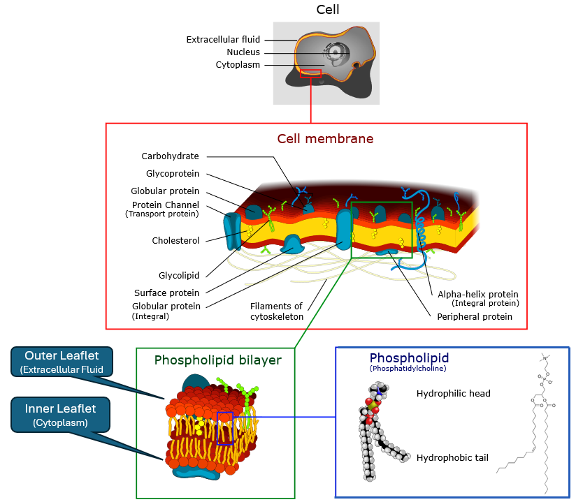

Molecular Biology Primer for Cheminformatics#
Cells as the basic unit of life: Cells are the fundamental building blocks of all living organisms. They are the smallest units that can carry out all life processes. There are two basic types of cells, eukaryotic and prokaryotic. Eukaryotic cells have a nucleus and membrane-bound organelles, while prokaryotic cells do not. Understanding cells is crucial for understanding how life functions at a molecular level.
Parts of a Cell:#
Cell (Plasma) Membrane:#
A protective barrier that surrounds the cell, separating the cytoplasm from the rest of the world and controlling the movement of substances in and out of the cell.

Cell membrane image, derivative work, Belford, Dhattfield, Marian Ruiz, cc-by-sa-3.0, via Wikimedia Commons
{kind=link}
{kind=link}
The membrane is a bilayer of two back-to-back sheets (leaflets) of phsopholipids, which have hydrophilic (water-attracting) heads and hydrophobic (water-repelling) tails. This results in two regions, a hydrophobic core and hydrophilic surfaces. The hydrophobic core acts as a barrier to most water-soluble substances, while allowing lipid-soluble substances to pass through. This results in the fluid mosaic model of the membrane, where proteins are embedded, and can function as channels, receptors, or enzymes, facilitating communication and transport across the membrane. The external layer is called the outer leaflet and the internal layer is called the inner leaflet. The outer leaflet faces the extracellular region (outside the cell) and the inner leaflet faces the cytoplasm (inside the cell).
How small molecules interact with the bilayer depends on their size, charge, and polarity.
Hydrophobic (nonpolar lipophilic) molecules can easily pass through the lipid bilayer.
Hydrophilic (polar) molecules and ions require specific transport proteins to cross the membrane.
Large molecules, such as proteins and nucleic acids, cannot pass through the membrane without assistance from vesicles or other transport mechanisms.
Other Types of Membranes#
Many eukaryotic organelles are enclosed by membranes, which compartmentalize distinct chemical environments within the cell. Some organelles are surrounded by a single bilayer membrane, while others (notably mitochondria and chloroplasts) have double membranes. These double-membrane organelles are unique because they retain small, prokaryote-like genomes, a legacy of their endosymbiotic origins: they are thought to have evolved from free-living prokaryotes that were engulfed by ancestral eukaryotic cells. It should be noted that some organelles, like ribosomes, the cytoskeleton and centrosomes, are not membrane-bound, but are still considered organelles due to their specialized functions within the cell.
Examples of membrane-bound organelles include:
Nuclear Envelope: double membrane surrounding the nucleus; has nuclear pores.
Endoplasmic Reticulum (ER): membrane network for protein/lipid synthesis.
Golgi Apparatus: stacked membranes for modifying and sorting proteins.
Mitochondria: double membrane; inner membrane highly folded (cristae) with proteins for respiration and ATP synthesis.
Chloroplasts (plants/algae): triple membrane system (outer, inner, and thylakoid membranes) for photosynthesis.
Lysosomes, Peroxisomes, Endosomes: single membranes enclosing digestive/oxidative enzymes.
Transport Vesicles: small membrane “bubbles” that shuttle cargo.
PubChem Descriptors and Membrane Relevance#
The following are some common descriptors from PubChem that are relevant to understanding how small molecules interact with cell membranes and their biological relevance. These descriptors help predict a molecule’s behavior in biological systems, including its ability to cross membranes, interact with proteins, and its overall pharmacokinetic properties.
PubChem Property |
What It Measures |
Membrane / Biological Relevance |
Rule of Thumb |
|---|---|---|---|
XLogP (logP) |
Predicted partition coefficient (octanol vs. water). Higher = more lipophilic. |
Determines whether a molecule prefers the lipid bilayer (hydrophobic core) or aqueous environment. |
- High logP (>3) → Lipid-soluble, crosses membranes easily. |
TPSA (Topological Polar Surface Area) |
Total polar surface area from oxygen/nitrogen atoms and attached hydrogens. |
Predicts hydrogen bonding and solubility in water vs. lipid. Strongly affects passive diffusion. |
- Low TPSA (<90 Ų) → Likely permeable. |
H-Bond Donor Count |
Number of –OH or –NH groups that can donate H-bonds. |
High donor count → stronger interaction with water, less likely to pass through hydrophobic bilayer. |
>5 donors often reduces membrane permeability. |
H-Bond Acceptor Count |
Number of electronegative atoms (O, N, etc.) that can accept H-bonds. |
Similar to donor count: too many acceptors → molecule is “stuck” in aqueous phase. |
>10 acceptors often reduces permeability. |
Molecular Weight (MW) |
Size of the molecule in Daltons. |
Larger molecules have more difficulty diffusing through the membrane without assistance. |
Passive diffusion usually limited to MW < 500 Da (Lipinski’s Rule of 5). |
Rotatable Bond Count |
Flexibility of the molecule. |
High flexibility decreases the likelihood of fitting neatly into lipid bilayers or binding sites. |
<10 rotatable bonds favored for oral drugs. |
Formal Charge |
Net charge of the molecule. |
Charged molecules interact poorly with hydrophobic bilayer, usually need ion channels or transport proteins. |
Neutral or zwitterionic molecules cross membranes more easily. |
Cytoplasm:#
The jelly-like substance within the cell membrane, where organelles are suspended.
Mostly water (70%+) but not “just water.”
Contains:
Salts and ions (Na⁺, K⁺, Ca²⁺, Cl⁻, Mg²⁺, etc.) → maintain charge balance, signaling.
Metabolites and small molecules** (glucose, ATP, amino acids, nucleotides).
Proteins (enzymes, structural proteins, signaling proteins).
Macromolecular crowding: high concentrations of proteins/nucleic acids give cytoplasm gel-like properties.
Cytoskeleton:#
A dynamic network of fibers (protein filaments) that provides structural support and shape to the cell, and aids in movement. The cytoskeleton is not just a “cell skeleton” but a complex, dynamic structure that plays many roles in cell function.
The cytoskeleton is composed of three main types of filaments:
Microtubules: Hollow tubes made of tubulin dimers; provide rigidity and tracks for intracellular transport.
Intermediate Filaments: Rope-like fibers made of various proteins (e.g., keratin, vimentin); provide tensile strength and mechanical support.
Actin Filaments (Microfilaments): Thin, flexible fibers made of actin monomers; involved in cell shape, motility, and muscle contraction.
Functions Beyond Structure#
Intracellular transport: motor proteins (dynein, kinesin, myosin) carry cargo along filaments.
Cell signaling: cytoskeleton interacts with receptors and signaling pathways.
Endocytosis: process of bringing substances into the cell by engulfing them in membrane-bound vesicles. The cytoskeleton plays a crucial role in this process by providing the necessary structure and movement for vesicle formation and transport.
Exocytosis: the process of exporting substances out of the cell by vesicle fusion with the plasma membrane. The cytoskeleton helps in the movement and fusion of these vesicles.
Division: microtubules form the spindle that separates chromosomes.
Relevance to PubChem Data#
Many bioassays in PubChem target the cytoskeleton indirectly, because:
Microtubule-targeting drugs (anticancer agents like paclitaxel, vinblastine) are heavily studied. PubChem has assays testing compound effects on tubulin polymerization/depolymerization.
Actin dynamics are critical for infection biology and motility assays. Some PubChem assays look at actin-targeting compounds (cytochalasins).
Signal transduction pathways (e.g., Rho GTPases regulating actin) often appear in PubChem bioassays; cytoskeletal rearrangements are the downstream readout.
Cell morphology-based assays: high-content screening in PubChem often measures changes in cell shape or division, which are cytoskeleton-dependent.
Descriptors like XLogP, TPSA, H-bond counts matter here too — they help predict whether small molecules can cross membranes to reach cytoskeletal proteins in the cytoplasm.
Endoplasmic Reticulum (ER):#
A network of membranes (flattened sacs and tubules) extending from the nuclear envelope into the cytoplasm. Built from same phospholipid bilayer as the cell membrane.
Divided into two forms (continuous but functionally distinct):
Rough ER: studded with ribosomes.
Smooth ER: lacks ribosomes, more tubular in shape.
Functions#
Rough ER (RER)
Protein synthesis & folding: Ribosomes on its surface translate mRNA into proteins destined for secretion, membranes, or organelles.
Quality control: Misfolded proteins are targeted for degradation (ER-associated degradation, ERAD).
Chemical relevance: Many PubChem assays test compounds for effects on protein folding (e.g., inhibitors of chaperone proteins like BiP/GRP78).
Smooth ER
Lipid synthesis: Synthesizes phospholipids, cholesterol, and steroid hormones.
Detoxification: Contains enzymes that metabolize drugs and toxins (e.g., cytochrome P450 family).
Calcium storage: Regulates intracellular calcium levels, important for signaling pathways.
Drug metabolism: Many PubChem assays involve compounds that affect ER function, especially in drug metabolism and toxicity studies.
Golgi Apparatus:#
An organelle that handles post-translational processing, packaging, and trafficking.
Post translatational packaging (building a linear chains of amino acids - raw proteins) from mRNA includes protein modifications such as glycosylation, phosphorylation, and sulfation. These modifications are crucial for the function of many proteins, including those that serve as drug targets (e.g., receptors, enzymes).
Packaging refers to loading proteins into vesicles for transport to their final destinations, such as the cell membrane, lysosomes, or secretion outside the cell.
Trafficking involves the movement of these vesicles along the cytoskeletal to their target locations.
Although the Golgi apparatus is not directly represented in PubChem, its functions are critical for understanding how proteins are modified and processed before they interact with small molecules. Many bioassays in PubChem involve proteins that have been modified by the Golgi, such as glycoproteins or phosphorylated proteins.
Lysosomes and Peroxisomes:#
Vesicle-like metabolic compartments that play roles in detoxification and recycling. Involved in catabolic processes, breaking down macromolecules into smaller components that can be reused or expelled from the cell. The lysosome breaks down macromolecules like proteins, lipids, and carbohydrates using hydrolytic enzymes. Peroxisomes are involved in lipid metabolism and detoxification of harmful substances, such as hydrogen peroxide.
Lysosomes#
Membrane-bound organelles containing hydrolytic enzymes that digest macromolecules, old organelles, and pathogens. They are often referred to as the “stomach” of the cell. Enzymes within lysosomes are active at acidic pH, which is maintained by proton pumps in the lysosomal membrane. Enzymes inlcude proteases, lipases, nucleaases and glycosidases.
Peroxisomes#
Membrane-bound organelles that contain enzymes for lipid metabolism, reactive oxygen control and detoxification. They are involved in the breakdown of fatty acids through beta-oxidation, producing acetyl-CoA and hydrogen peroxide (H₂O₂) as byproducts. Peroxisomes also contain catalase, an enzyme that converts hydrogen peroxide into water and oxygen, preventing oxidative damage to the cell.
Key Differences Between Lysosomes and Peroxisomes#
Feature |
Lysosomes |
Peroxisomes |
|---|---|---|
Contents |
Hydrolytic enzymes (proteases, lipases, nucleases, glycosidases). |
Oxidative enzymes (oxidases, catalase). |
Optimal conditions |
Acidic (pH ~4.5–5.0, maintained by proton pumps). |
Neutral pH (~7.0), but high oxidative environment (H₂O₂ produced/destroyed). |
Main function |
Digest macromolecules and organelles (autophagy, immune defense). |
Break down fatty acids, detoxify peroxides, synthesize plasmalogens. |
Waste products |
Simple monomers: amino acids, sugars, nucleotides, fatty acids → recycled. |
H₂O₂ as a byproduct → decomposed by catalase into H₂O + O₂. |
Metabolic tie-ins |
Recycling macromolecules into building blocks for biosynthesis. |
Lipid metabolism, energy metabolism (fatty acid β-oxidation). |
Disease link |
Lysosomal storage diseases (e.g., Gaucher, Tay–Sachs). |
Peroxisomal disorders (e.g., Zellweger syndrome, adrenoleukodystrophy). |
Drug relevance |
Small molecules may accumulate in lysosomes; inhibitors target lysosomal enzymes. |
Drugs can affect oxidative stress or PPAR-regulated peroxisome proliferation. |
Mitochondria:#
The powerhouse of the cell, generating energy through cellular respiration. The mitochondria are double-membrane organelles, with an outer membrane that is smooth and permeable to small molecules, and an inner membrane that is highly folded into structures called cristae, which increase the surface area for chemical reactions. The space between the two membranes is called the intermembrane space, while the innermost compartment is called the mitochondrial matrix. Within the matrix, there are enzymes for the citric acid cycle (Krebs cycle) and the electron transport chain, which are crucial for ATP production. Mitochondria also contain their own DNA (mtDNA), which is circular and resembles bacterial DNA, supporting the endosymbiotic theory of their origin. Within the intermembrane space, there are also proteins involved in the electron transport chain, which is responsible for ATP production through oxidative phosphorylation.
Electron Transport Chain (ETC)#
The electron transport chain (ETC) is a series of protein complexes and other molecules embedded in the inner mitochondrial membrane. It plays a crucial role in cellular respiration by transferring electrons from electron donors (NADH and FADH₂) to oxygen, the final electron acceptor. This process generates a proton gradient across the inner membrane, which drives ATP synthesis through ATP synthase.
Relevance to PubChem#
Mitochondria are central in many bioassays, especially in toxicology, cancer biology, and metabolism research:
ETC inhibitors: classic drugs/toxins (rotenone, antimycin, oligomycin) target specific complexes. Assays measure oxygen consumption or ATP levels.
Mitochondrial membrane potential: fluorescent dyes track how compounds affect proton gradients.
ROS assays: compounds tested for mitochondrial oxidative stress.
Mitochondrial toxicity: many antibiotics, antivirals, and cancer drugs have side effects on mitochondria (due to bacterial ancestry).
Apoptosis assays: mitochondrial release of cytochrome c is often used as a readout for pro-apoptotic compounds.
Mitochondrial DNA: some assays look at how compounds affect mtDNA replication or transcription.
Nucleus:#
The nucleus is the defining feature of eukaryotic cells, separating them from prokaryotes. It serves as the repository and control center for genetic information, housing the cell’s DNA in a protected environment. Surrounded by a double membrane called the nuclear envelope, the nucleus maintains a distinct chemical environment that allows DNA to be stored, replicated, and transcribed into RNA without interference from cytoplasmic processes. Nuclear pores in the envelope act as selective gateways, regulating the flow of proteins, RNAs, and small molecules in and out of the nucleus.
Inside, the DNA is packaged with proteins into a material called chromatin, which can be loosely or tightly packed depending on whether genes are active or silenced. The nucleus also contains the nucleolus, a prominent non-membrane structure where ribosomal RNA is made and ribosome components are assembled. Together, these features make the nucleus the cell’s command center, coordinating when and how genetic information is expressed.
From a biomedical perspective, the nucleus is one of the most important organelles in drug discovery and toxicology. Many compounds affect nuclear processes: some bind directly to DNA, others alter chromatin structure through epigenetic mechanisms, and still others act on nuclear receptors, proteins that regulate transcription in response to hormones and small molecules.
Transcription:#
Transcription is the process by which the genetic instructions stored in DNA are copied into RNA. It is the first major step in the expression of genes, serving as the bridge between the long-term storage of genetic information in the nucleus and the short-lived working copies (RNAs) that guide protein synthesis in the cytoplasm.
In eukaryotic cells, transcription takes place inside the nucleus, where DNA is housed. The enzyme RNA polymerase reads a DNA template strand and builds a complementary RNA strand. Depending on the gene, this RNA may become:
mRNA (messenger RNA): carries the genetic code for making proteins. After processing, mature mRNA exits the nucleus through nuclear pores and enters the cytoplasm, where ribosomes read its sequence during translation.
rRNA (ribosomal RNA): a structural and catalytic component of ribosomes. rRNAs are exported from the nucleus but remain bound up in ribosomal subunits, not translated like mRNAs.
tRNA (transfer RNA): delivers amino acids to the ribosome during translation. After transcription and processing, tRNAs are exported to the cytoplasm where they are “charged” with amino acids.
Together, mRNA, rRNA, and tRNA make protein synthesis possible. The mRNA provides the genetic instructions, acting as the blueprint. The rRNA, as part of the ribosome, is the catalytic machine that reads the mRNA and links amino acids. The tRNAs serve as adaptors, matching each codon on the mRNA with the correct amino acid and delivering it to the ribosome. None of these RNAs can do the job alone — only by working together does the cell successfully translate genetic information into functional proteins.
Ribosomes:#
The ribosome is the universal protein factory of the cell, found in both prokaryotes and eukaryotes. Unlike most organelles, ribosomes are not surrounded by a membrane but are instead large complexes of ribosomal RNA (rRNA) and proteins. Their job is to read the genetic instructions carried by messenger RNA (mRNA) and translate those instructions into chains of amino acids, which then fold into functional proteins. Because every process in the cell depends on proteins, ribosomes are central to life itself.
In eukaryotes, ribosomes are first assembled in the nucleolus of the nucleus and then exported into the cytoplasm, where they become active. They occur in two forms: free ribosomes, which float in the cytoplasm and produce proteins for use inside the cell, and bound ribosomes, which attach to the surface of the rough endoplasmic reticulum (RER) to synthesize proteins that will be secreted, embedded in membranes, or sent to organelles. Structurally, the two populations of ribosomes are identical and derived from the same genetic material; what differs is where they dock during protein synthesis.
Ribosomes consist of two unequal subunits — one large and one small — each built from a specific combination of rRNA molecules and proteins. In prokaryotes, the complete ribosome is known as a 70S particle (30S small subunit + 50S large subunit), while in eukaryotes it is an 80S particle (40S small subunit + 60S large subunit). This difference is medically important because many antibiotics selectively target bacterial ribosomes without harming eukaryotic ribosomes
Translation#
Translation is the process by which the genetic code carried by messenger RNA (mRNA) is decoded to synthesize proteins. It occurs in the cytoplasm, where ribosomes read the mRNA sequence and assemble amino acids into a polypeptide chain according to the instructions encoded in the mRNA. This process is essential for gene expression and is tightly regulated to ensure that proteins are produced at the right time and in the right amounts. There are three main stages of translation: initiation, elongation, and termination.
Initiation – The ribosome (made partly of rRNA) assembles on the mRNA and finds the starting point. The first tRNA brings in the amino acid methionine to begin the protein chain.
Elongation – The ribosome’s rRNA machinery reads the mRNA codons in order. Each new codon is matched by a tRNA, which delivers the correct amino acid. The ribosome links the amino acids together, forming a growing chain.
Termination** – When the ribosome encounters a “stop” signal on the mRNA, no tRNA matches. Instead, the ribosome releases the finished protein, and its subunits separate, ready for the next round.
…TO BE CONTINUED…
Vacuoles:#
Storage organelles that can hold various substances, including nutrients and waste products.
Vesicles:#
small membrane-bound sacs that transport materials within the cell.